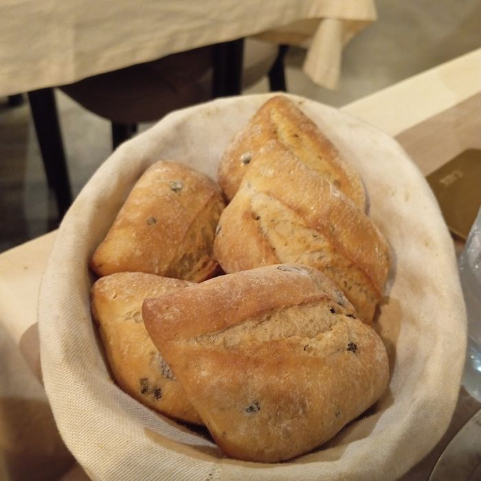
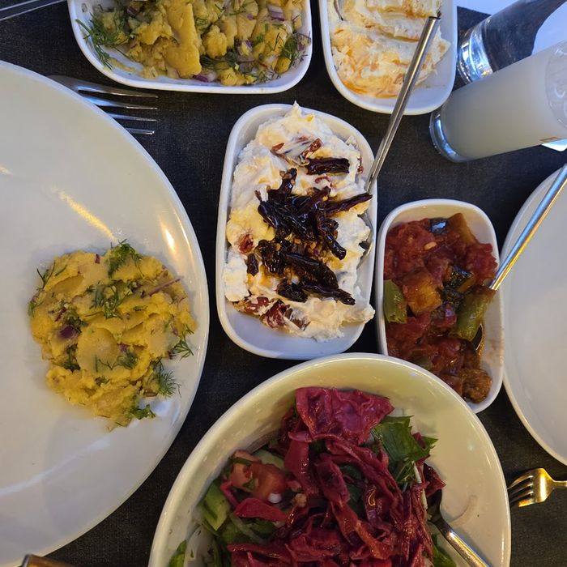
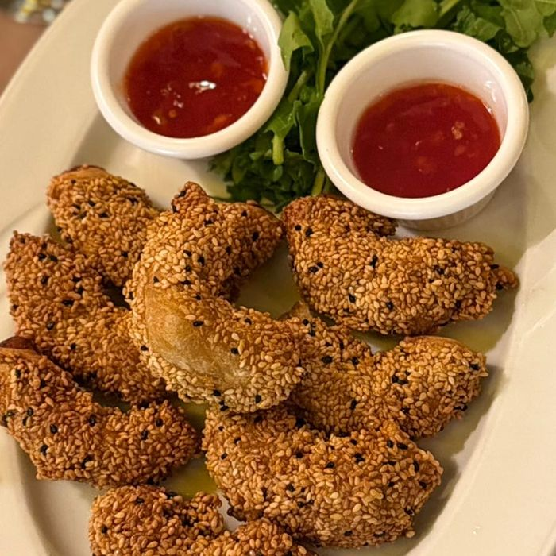
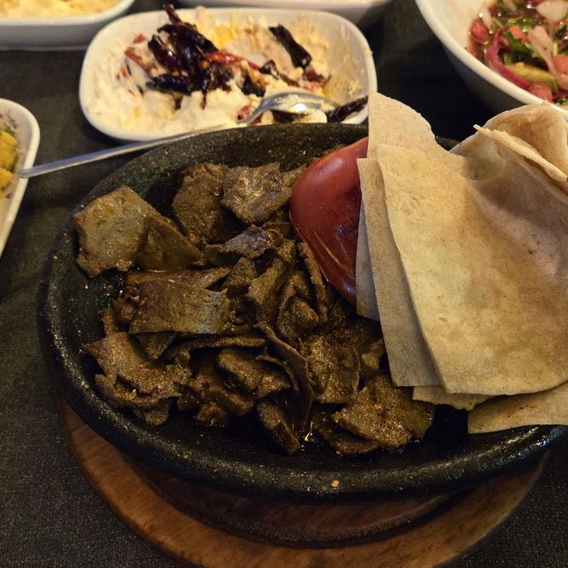
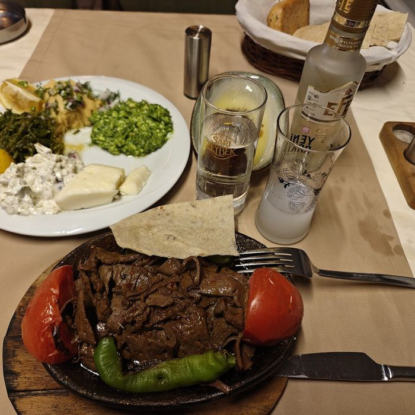

Zeytinyağlı Tabağı ve Ekmek
Mevsimin zeytinyağlıları ve sıcak ekmek.
Siz oturur oturmaz gelir, istenmeden.

Mevsimin zeytinyağlıları ve sıcak ekmek.
Kapıdaki dolaptan gözle seçilir. İçerik mevsime göre değişir.

Misafirlerin en çok andığı meze.
Masadaki kişi sayısına göre kurulur.
Rakı bu bölümde devreye girer.

Susama bulanıp kızartılır, yanında iki sosla gelir.
Limon ve yeşillikle.
Sarımsak taneleriyle.
Gecenin geç saatinde, sofra kurulduktan sonra.

Kalabalık sofralar ve özel günler için. Açılıştan tatlıya kadar sıra bozulmaz.

Açılış, mezeler, ara sıcaklar, ana yemek ve tatlı. Kişi başı fiyat için lütfen bize yazın.
Meyhanenin kendi düzeni: rakı, şarap ve yanında bol buz.